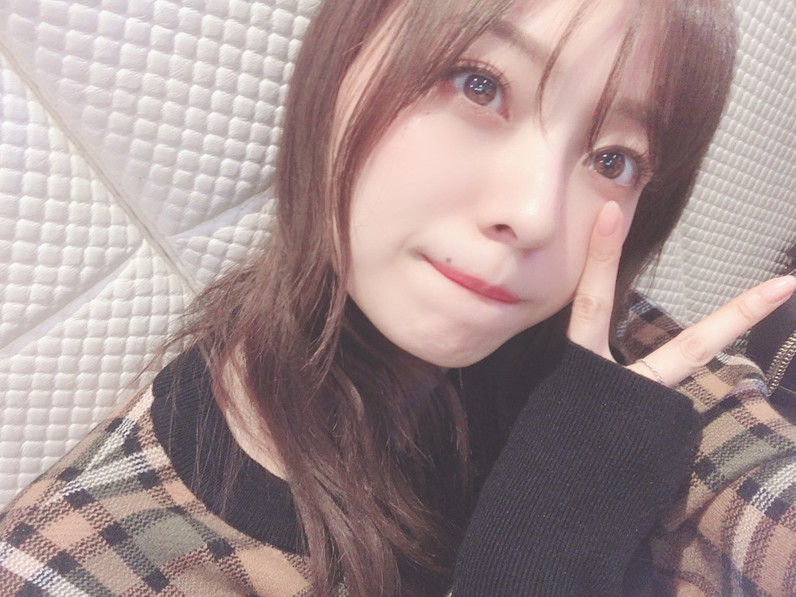
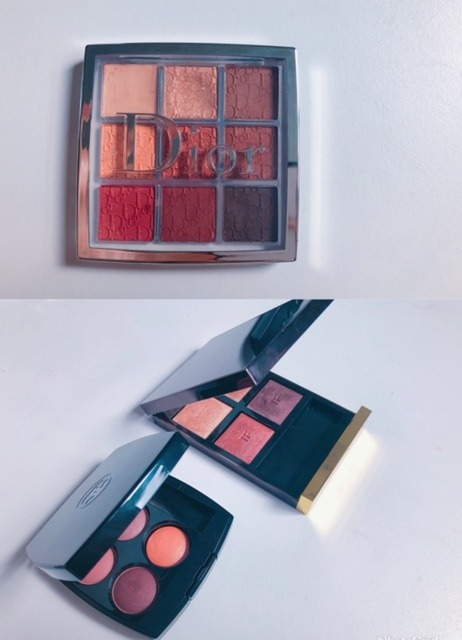
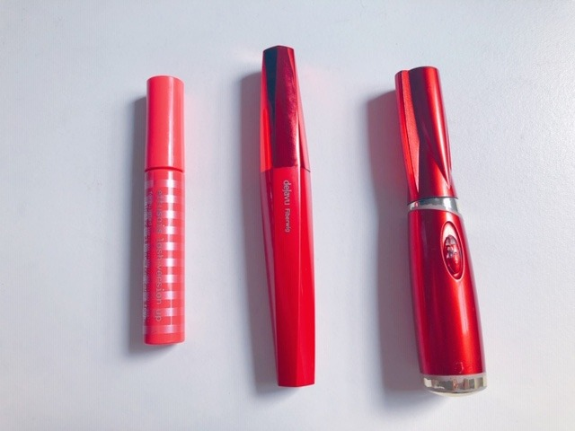
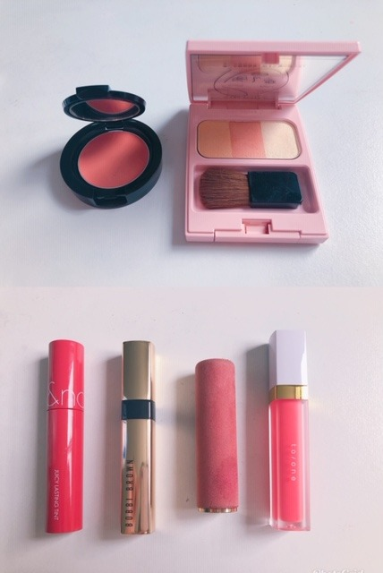
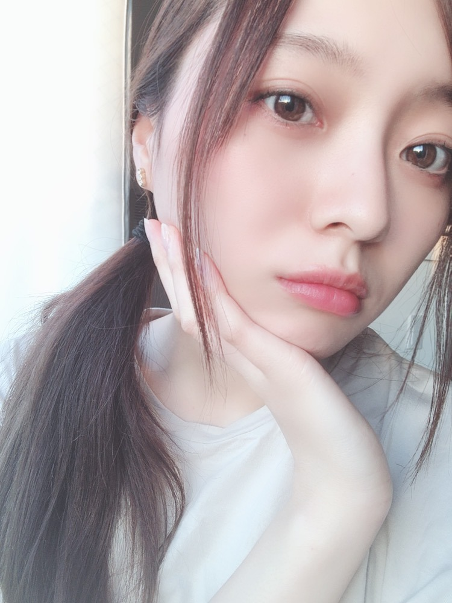

メイクとか〜色々と〜

結局、ゲームは始めずにいます、、
気になるけどねえ〜！！
弟にゲーム機をプレゼントしました☀︎
喜んでる様子の写真が送られてきました☀︎ふふ
今は、お部屋の掃除だったり
過去の録画してある歌番組の録画を観たり
舞台のDVDを観たり、、
夜はのんびりストレッチ。
軽いトレーニング。
ダラダラする日も作りつつ
しっかりやる事やらなきゃ！と思い
どうにか思い腰を上げる努力をしています。
天気が良い日が多いですし
日光もきちんと取り込んで浴びつつね。
自炊もしていますが
日々の日課すぎて
写真を撮ることも中々なくて、、
メールにでも送ろうかな〜
チラッと載せてみますね。
興味無い方はサラッと飛ばしてくださいませ。
▽アイシャドウ

・Dior バックステージ アイ パレット 003アンバー
・CHANEL 354 ウォーム メモリーズ
・TOMFORD 4A ハネムーン
ディオールのパレットが
今一番使用率の高いアイシャドウです。
これ一つあれば、ブラウンメイクも
赤みの強いメイクもオレンジメイクも出来ちゃいます。万能。
基本最近のオレンジメイクは
このシャドウを使ってます！
新色がでたのでゲットしたい、、
シャネル、トムフォードの方は
気分を少し変えたい時に使います☀︎
トムフォードは姉からのプレゼント❤︎
アイシャドウは可愛いのが溢れていて、、
すーぐ目移りしてしまいます、、
▽マスカラ

左から
・エテュセ ラッシュバージョンアップ
・デジャヴュ ファイバーロングウルトラロング
まつ毛は一番時間をかけ
念入りに仕上げますが、
色々試した中で今はこのアイテムで落ち着いています。
マスカラ下地もマスカラも、
もう何本リピートしたか分かりません（笑）
このマスカラ下地はまつ毛を硬くすることも固めすぎることも無く、
ナチュラルに液が付く上に
カールの持ちが最強です！
まつ毛の長さか、ボリュームか、
何処に重きを置くかでアイテムは変わりますが
私はロングに仕上げたいので、、
このマスカラが物凄く合います！
二度塗りしています。私は目尻から目頭までガッツリビューラーであげちゃいます☀︎
▽チーク、リップ

チーク左から
・MiMC 07 スマイリーコーラル
・Whomee sunflower
私の中で最強の組み合わせです☀︎
オレンジ単体を付けると私の肌の色味的に合わなくて馴染まないので、、
MiMCのコーラルっぽい、オレンジチークと喧嘩しない色味の練りチークを塗ってから
オレンジを重ねればいい具合になります◎
リップ左から
・rom&and JLティント #11 PINK PUMPKIN
・BOBBI BROWN ﾘｭｸｽ ｼｬｲﾝ ｲﾝﾃﾝｽ ﾘｯﾌﾟｽﾃｨｯｸ 13
・LANCOME ラプソリュ ルージュ 274
・ｔｏ/ｏｎｅ ペタル エッセンス グロス 05
リップは一番コロコロ変わりますが
今のオレンジメイクでの使用リップはこんな感じです。
左３本の中から気分で選びつつ
最後はトーンのグロスで仕上げます。
何本も使って重ねて色を作ることもあります！
ベタつくグロスが苦手なのですが、
トーンのグロスは全くベタつかずサラサラで
どのリップに重ねても邪魔しない色味なので
今一番好きなグロスです◎
トーンのコスメは特に、
香りも大好きで癒されるしコスメのパッケージや雰囲気もかなり好みです。
ばばーっと描きましたが、、
分かりにくくてすみません。
やはり文字での説明は
難しいですね、、
少しでも参考になればと思います。
毎日メイクをしたり、
服を選んだりする時間が
私の中ですごく大事だったんだと
改めて気づきまして。
お肌を休める時間を多く取りつつ、
雑誌や動画を参考にしながら色んなメイクして研究してみてます〜
また使用アイテムなど色々変われば、
書きますね☀︎
さて！
「映像研には手を出すな！」
放送開始しています。
ご覧いただけていますでしょうか？
感想など、見ております
ありがとうございます！
もう第２話の放送が
４／１２ 24:50〜 MBS を皮切りに
順次放送が始まります！
私はリアルタイムで、観ていますよ、
中々に照れくさいですが。
詳しい放送日などはホームページをご覧下さい！
https://eizouken-saikyo.com/
ありがとうございます！
全部目を通していますよ◎
こうして言葉を並べ文字に起こしたものが
皆様に見ていただけていると思うと
すごく嬉しくなりますが
なんだか緊張しますね。
皆様のおうち時間の
ほんと数分の暇つぶしでもなれたら、、
と思います！

完全オフモードの日は
徹底して、だらけます（笑）
毎日それが続かないように心がけてはいますが、、
またぜひコメントください☀︎
では。
また更新します！
状況が常に色々変わる日々ですが
いつもよりもゆっくりした毎日だからこそ、小さな幸せに気づけたりもしますよね、
こんな時だからこそ
周りの人の優しやだったり温かさに
物凄く救われたりします。
わたしも誰かにとって、そんな一人になれたらなあと思います！！簡単ではないですが！
Original：https://www.nogizaka46.com/s/n46/diary/detail/55868?ima=4940&cd=MEMBER